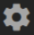

The Unity Hub is a management tool that allows you to manage all of your Unity projects and installations. Use the Hub to manage multiple installations of the Unity Editor along with their associated componentsA functional part of a GameObject. A GameObject can contain any number of components. Unity has many built-in components, and you can create your own by writing scripts that inherit from MonoBehaviour. More info
See in Glossary, create new Projects, and open existing Projects.
To install the Unity Hub, visit Download Unity Personal on the Unity website,
To install and use the Unity Editor, you must have a Unity Developer Network (UDN) account. If you already have an account, sign in and proceed to the Installing the Unity Editor section.
If you do not have an account, follow the prompts to create one. You can choose to create a Unity ID, or use one of the social sign-ins. For more information on accounts and subscriptions, see Unity Organizations.
To install the Editor:
Click the Installs tab. The default install locations are:
Windows:
C:\Program Files\Unity\Hub\Editor
Mac:
/Application/Unity/Hub/Editor
Optionally, to change the default installation location, click the Gear icon. 
In the Editor Folder Location dialog box, enter the new installation location and click Done.
Click Official Releases for released versions of the Editor, or Beta Releases for the latest Beta release of the Editor.
Click the Download button of the Editor version you want to install. This opens a dialog box called Add components to your install.
In the Add components to your install dialog box, select the components you want to install with the Editor, and click Done. If you don’t install a component now, you can add it later if you need to.
If you are installing multiple Editor versions, the first installation starts as soon as the download is complete. Other selected versions download simultaneously and queue to start when the current installation finishes.
The Hub displays the installation location of each Editor under the corresponding version label.
To set it an Editor version as your preferred version, add components to it, or uninstall it, click the three dots next to that Editor version.
If you remove or uninstall the preferred Editor version, another installed Editor version becomes the preferred version.
You can add instances of the Editor to the Hub that you installed outside of the Hub.
On macOS, the path is typically:
/Applications/Unity/Hub/Editor/<version>/Unity.app
On Windows, the path is typically:
C:\Program Files\Unity\Editor\Unity.exe
Or
C:\Program Files\Unity<version>\Editor\Unity.exe
To set the Editor as the preferred version, or to remove the Editor from the Hub, click the three dots next to the Editor version.
Removing an Editor that you added in this manner does not uninstall it or modify it in anyway.
Sign in status is not shared for pre–2017.1 versions of the Editor opened through the Hub. Performing tasks such as Manage License, Open Project, Create Project, and Sign in opens the Unity Launcher instead of the Hub.
If you attempt to use the Unity Hub to open an Editor version 5 or earlier and you do not have an appropriate license file, the Editor will hang on the splash screen.
To avoid this issue, run the Editor directly, external to the Unity Hub, and the Editor will load correctly even if the license file is not detected.
2018–06–12 Page published with editorial review
Did you find this page useful? Please give it a rating: